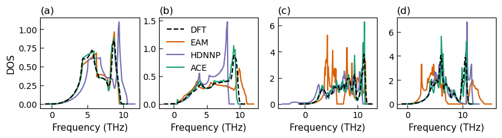

import numpy as np
import matplotlib.pylab as plt
import time
from helper import get_clean_project_name
from pyiron_atomistics import Project
from pyiron_atomistics.atomistics.structure.atoms import ase_to_pyiron, pyiron_to_ase
import pyiron_gpl
import seaborn as sns
import pandas as pd
from pychromatic import Multiplot
from pychromatic.colors import accent
from scipy.optimize import curve_fit
colors = {"g": "#1b9e77", "r": "#d95f02", "b": "#7570b3"}
/home/menon/miniconda3/envs/potentials2023/lib/python3.10/site-packages/numpy/core/getlimits.py:542: UserWarning: Signature b'\x00\xd0\xcc\xcc\xcc\xcc\xcc\xcc\xfb\xbf\x00\x00\x00\x00\x00\x00' for <class 'numpy.longdouble'> does not match any known type: falling back to type probe function.
This warnings indicates broken support for the dtype!
machar = _get_machar(dtype)
pr = Project("validation_LiAl2")
list_of_phases = ["Al_fcc","Li_bcc","Li2Al2_cubic","LiAl3_cubic"]
def filter_elastic(job_table):
return (job_table.hamilton == "ElasticMatrixJob") & (job_table.status == "finished")
# Get corresponding elastic constants
def get_c11(job_path):
return job_path["output/elasticmatrix"]["C"][0, 0]
def get_c12(job_path):
return job_path["output/elasticmatrix"]["C"][0, 1]
def get_c44(job_path):
return job_path["output/elasticmatrix"]["C"][3, 3]
def get_potential(job_path):
return job_path.project.path.split("/")[-2]
def get_crystal_structure(job_path):
return job_path.job_name.split("_")[-1]
def get_compound(job_path):
return job_path.job_name.split("_")[-2]
table = pr.create_table("table_elastic", delete_existing_job=True)
table.db_filter_function = filter_elastic
table.add["potential"] = get_potential
table.add["C11"] = get_c11
table.add["C12"] = get_c12
table.add["C44"] = get_c44
table.add["compound"] = get_compound
table.add["crystal_structure"] = get_crystal_structure
table.run()
data_elastic = table.get_dataframe()
data_elastic["phase"] = data_elastic.compound + "_" + data_elastic.crystal_structure
data_elastic = data_elastic[data_elastic["phase"].isin(list_of_phases)]
data_elastic
The job table_elastic was saved and received the ID: 2086
| job_id | potential | C11 | C12 | C44 | compound | crystal_structure | phase | |
|---|---|---|---|---|---|---|---|---|
| 0 | 1875 | AlLi_eam | 98.072058 | 66.458423 | 46.128769 | Al | fcc | Al_fcc |
| 1 | 1891 | AlLi_eam | 14.905778 | 14.365771 | 11.504125 | Li | bcc | Li_bcc |
| 2 | 1907 | AlLi_eam | 130.928772 | 50.341046 | 25.279659 | Li2Al2 | cubic | Li2Al2_cubic |
| 3 | 1924 | AlLi_eam | 97.232783 | 67.752767 | 22.146522 | LiAl3 | cubic | LiAl3_cubic |
| 4 | 1941 | AlLi_hdnnp | 131.078962 | 67.060904 | 48.627761 | Al | fcc | Al_fcc |
| 5 | 1957 | AlLi_hdnnp | 11.788102 | 13.454052 | 12.623277 | Li | bcc | Li_bcc |
| 6 | 1973 | AlLi_hdnnp | 119.859227 | 20.487189 | 41.936676 | Li2Al2 | cubic | Li2Al2_cubic |
| 7 | 1990 | AlLi_hdnnp | 109.832419 | 44.780823 | 43.105017 | LiAl3 | cubic | LiAl3_cubic |
| 8 | 2007 | AlLi_ace | 130.390756 | 61.022690 | 39.354664 | Al | fcc | Al_fcc |
| 9 | 2023 | AlLi_ace | 13.107614 | 12.416830 | 10.918415 | Li | bcc | Li_bcc |
| 10 | 2039 | AlLi_ace | 111.681638 | 14.752221 | 41.548916 | Li2Al2 | cubic | Li2Al2_cubic |
| 11 | 2056 | AlLi_ace | 110.178569 | 40.526848 | 42.763496 | LiAl3 | cubic | LiAl3_cubic |
mlt = Multiplot(columns=4, rows=1, width=700, ratio=0.2, )#wspace=0.3)
phase = 'Al_fcc'
data = data_elastic[(data_elastic.phase == phase)]
dft_ref = pd.read_csv(phase.lower()+"_dos.csv")
mlt[0,0].plot(dft_ref["dos_energy"],dft_ref["dos_total"],ls="--",lw=1.5,color='black',label="DFT",zorder=10)
pot = 'AlLi_eam'
phonopy_job = pr[get_clean_project_name(pot) + f"/phonopy_job_{phase}"]
thermo = phonopy_job.get_thermal_properties(t_min=0, t_max=800)
mlt[0,0].plot(phonopy_job["output/dos_energies"], phonopy_job["output/dos_total"],
lw=1.5,
color=colors["r"],
label='EAM')
pot = 'AlLi_hdnnp'
phonopy_job = pr[get_clean_project_name(pot) + f"/phonopy_job_{phase}"]
thermo = phonopy_job.get_thermal_properties(t_min=0, t_max=800)
mlt[0,0].plot(phonopy_job["output/dos_energies"], phonopy_job["output/dos_total"],
lw=1.5,
color=colors["b"],
label='HDNNP')
pot = 'AlLi_ace'
phonopy_job = pr[get_clean_project_name(pot) + f"/phonopy_job_{phase}"]
thermo = phonopy_job.get_thermal_properties(t_min=0, t_max=800)
mlt[0,0].plot(phonopy_job["output/dos_energies"], phonopy_job["output/dos_total"],
lw=1.5,
color=colors["g"],
label='ACE')
mlt[0,0].set_ylabel("DOS",fontsize=11)
mlt[0,0].set_title("(a)", loc='left', fontsize=12)
mlt[0,0].set_xlabel("Frequency (THz)",fontsize=11)
phase = 'Li_bcc'
data = data_elastic[(data_elastic.phase == phase)]
dft_ref = pd.read_csv(phase.lower()+"_dos.csv")
mlt[0,1].plot(dft_ref["dos_energy"],dft_ref["dos_total"],ls="--",lw=1.5,color='black',label="DFT", zorder=10)
pot = 'AlLi_eam'
phonopy_job = pr[get_clean_project_name(pot) + f"/phonopy_job_{phase}"]
thermo = phonopy_job.get_thermal_properties(t_min=0, t_max=800)
mlt[0,1].plot(phonopy_job["output/dos_energies"], phonopy_job["output/dos_total"],
lw=1.5,
color=colors["r"],
label='EAM')
pot = 'AlLi_hdnnp'
phonopy_job = pr[get_clean_project_name(pot) + f"/phonopy_job_{phase}"]
thermo = phonopy_job.get_thermal_properties(t_min=0, t_max=800)
mlt[0,1].plot(phonopy_job["output/dos_energies"], phonopy_job["output/dos_total"],
lw=1.5,
color=colors["b"],
label='HDNNP')
pot = 'AlLi_ace'
phonopy_job = pr[get_clean_project_name(pot) + f"/phonopy_job_{phase}"]
thermo = phonopy_job.get_thermal_properties(t_min=0, t_max=800)
mlt[0,1].plot(phonopy_job["output/dos_energies"], phonopy_job["output/dos_total"],
lw=1.5,
color=colors["g"],
label='ACE')
mlt[0,1].set_title("(b)", loc='left', fontsize=12)
mlt[0,1].set_xlabel("Frequency (THz)",fontsize=11)
mlt[0,1].legend(frameon=False)
phase = 'Li2Al2_cubic'
data = data_elastic[(data_elastic.phase == phase)]
dft_ref = pd.read_csv(phase.lower()+"_dos.csv")
mlt[0,2].plot(dft_ref["dos_energy"],dft_ref["dos_total"],ls="--",lw=1.5,color='black',label="DFT",zorder=10)
pot = 'AlLi_eam'
phonopy_job = pr[get_clean_project_name(pot) + f"/phonopy_job_{phase}"]
thermo = phonopy_job.get_thermal_properties(t_min=0, t_max=800)
mlt[0,2].plot(phonopy_job["output/dos_energies"], phonopy_job["output/dos_total"],
lw=1.5,
color=colors["r"],
label='EAM')
pot = 'AlLi_hdnnp'
phonopy_job = pr[get_clean_project_name(pot) + f"/phonopy_job_{phase}"]
thermo = phonopy_job.get_thermal_properties(t_min=0, t_max=800)
mlt[0,2].plot(phonopy_job["output/dos_energies"], phonopy_job["output/dos_total"],
lw=1.5,
color=colors["b"],
label='HDNNP')
pot = 'AlLi_ace'
phonopy_job = pr[get_clean_project_name(pot) + f"/phonopy_job_{phase}"]
thermo = phonopy_job.get_thermal_properties(t_min=0, t_max=800)
mlt[0,2].plot(phonopy_job["output/dos_energies"], phonopy_job["output/dos_total"],
lw=1.5,
color=colors["g"],
label='ACE')
#mlt[0,2].set_ylabel("DOS",fontsize=11)
mlt[0,2].set_title("(c)", loc='left', fontsize=12)
mlt[0,2].set_xlabel("Frequency (THz)",fontsize=11)
phase = 'LiAl3_cubic'
data = data_elastic[(data_elastic.phase == phase)]
dft_ref = pd.read_csv(phase.lower()+"_dos.csv")
mlt[0,3].plot(dft_ref["dos_energy"],dft_ref["dos_total"],ls="--",lw=1.5,color='black',label="DFT", zorder=10)
pot = 'AlLi_eam'
phonopy_job = pr[get_clean_project_name(pot) + f"/phonopy_job_{phase}"]
thermo = phonopy_job.get_thermal_properties(t_min=0, t_max=800)
mlt[0,3].plot(phonopy_job["output/dos_energies"], phonopy_job["output/dos_total"],
lw=1.5,
color=colors["r"],
label='EAM')
pot = 'AlLi_hdnnp'
phonopy_job = pr[get_clean_project_name(pot) + f"/phonopy_job_{phase}"]
thermo = phonopy_job.get_thermal_properties(t_min=0, t_max=800)
mlt[0,3].plot(phonopy_job["output/dos_energies"], phonopy_job["output/dos_total"],
lw=1.5,
color=colors["b"],
label='HDNNP')
pot = 'AlLi_ace'
phonopy_job = pr[get_clean_project_name(pot) + f"/phonopy_job_{phase}"]
thermo = phonopy_job.get_thermal_properties(t_min=0, t_max=800)
mlt[0,3].plot(phonopy_job["output/dos_energies"], phonopy_job["output/dos_total"],
lw=1.5,
color=colors["g"],
label='ACE')
mlt[0,3].set_title("(d)", loc='left', fontsize=12)
mlt[0,3].set_xlabel("Frequency (THz)",fontsize=11)
plt.savefig("img_dos.png", dpi=300, bbox_inches='tight')
